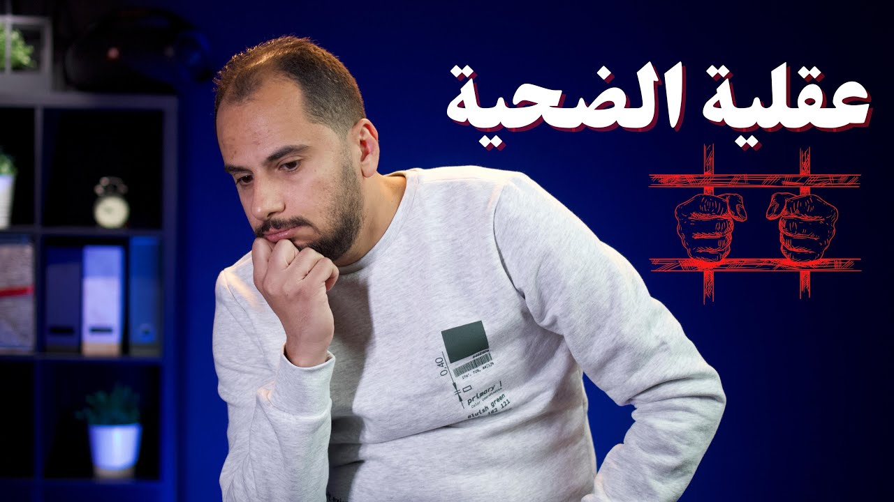

تطوير الذات
عقلية الضحية - كيف تحطم قيود عقلك وتهرب من سجن الضحية؟
عقلك ممكن يعيشك في جنة أو في جحيم، واللي بيحدد ده طريقة تفكيرك. ومن أصعب العقليات اللي بتسجن صاحبها عقلية الضحية: 5 صفات تعرف بيها إنك محبوس جواها، و3 تمارين تساعدك تخرج منها.

شغّل الحلقةعقلك هو سجنك. وسجن العقل واحد من أصعب السجون اللي ممكن تعيش فيها، لأنه مش بس بيحبسك في مكان واحد؛ لأ، ده كمان ممكن يشل حركتك تمامًا. ممكن يخليك تشوف العتمة في عز الضهر، ويحسسك بالذل في أوقات النصر.
عنده قدرة رهيبة على إثبات الحقيقة أو تزييفها. في لحظة ممكن يحسسك إنك أكتر إنسان محبوب وناجح في الدنيا، وفي لحظة تانية ممكن يخليك تحس إنك صاحب الحظ الأسوأ في العالم. باختصار، عقلك ممكن يعيشك في جنة أو في جحيم، واللي بيحدد ده هو إنت وطريقة تفكيرك، أو بمعنى أدق: عقليتك.
وواحدة من أصعب العقليات اللي بتسجن صاحبها حرفيًا هي عقلية الضحية. ودي طريقة تفكير متعود عليها كتير من الناس، ووارد تكون إنت واحد منهم. عشان كده المقال ده جزئين: في الأول هقولك على 5 صفات موجودين في أصحاب عقلية الضحية، عشان تكتشف إن كانت العقلية دي عندك ولا لأ. وفي التاني هقولك على 3 أفكار وطرق هيساعدوك تخرج وتهرب من سجن عقلية الضحية.
عقلية الضحية بتيجي منين؟ 1:24
فيه باحثين شايفين إن الميل إنك تشوف نفسك ضحية ممكن تكون جذوره في علاقتنا الأولى باللي ربّانا، وإنه كمان بيتأثر بالظروف والتنشئة. ده تفسيرهم لنتايج بتلاقي ارتباط، مش إثبات إن ده السبب، ومش اتفاق بين كل العلماء.1 وعقلية الضحية عبارة عن طريقة تفكير بنتعود نفكر بيها، وفي معظم الأحيان مش بنكون عارفين إن إحنا مسجونين جواها.
عشان كده هقولك على 5 صفات هتقدر تميّز بيهم أصحاب العقلية دي.
إيه صفات أصحاب عقلية الضحية؟ 1:43
أول صفة: إنهم دايمًا بيشوفوا الجانب المظلم، بيشوفوا نص الكباية الفاضي زي ما بيقولوا. يعني مثلًا لو اليوم كله مليان بحاجات إيجابية، وحصلت حاجة واحدة بس سلبية، هيركنوا كل الإيجابي ده على جنب ويركزوا بس على الحاجة السلبية. كمان في بعض المناقشات بياخدوا كلام الناس على إنه انتقاد ليهم، وبيفسروا كلمات عادية على إن ليها مدلول ساخر أو ناقد ليهم.
وطريقة التفكير دي بتخلينا دايمًا محبطين، لأننا مش بنشوف خالص الحاجات الحلوة اللي في حياتنا. وكمان هتمنعنا ناخد أي خطوة جديدة، لأننا هنقعد نفكر في سلبياتها فمش هنبتدي.
تاني صفة: إنهم دايمًا بيسألوا السؤال ده: ليه؟ في أي موقف أو أي مشكلة هتلاقيه بيقول: ليه كل حاجة في حياتي صعبة؟ ليه كل الناس بتتعامل معايا بالطريقة دي؟ ليه الناس مش بتفهمني؟ ليه الظروف مش بتنتهي؟
الصفة التالتة: إنهم بيفكروا كتير في مواقف حصلت وانتهت، أو في ظروف مش في إيديهم يغيروها، زي اللي بيفكروا في الغلاء. مع إنهم عارفين إن تفكيرهم الزيادة في الحاجات دي مش هيغير من الواقع حاجة، وإن تفكيرهم في الماضي مش هيعدّله.
الصفة الرابعة: إنهم دايمًا بيهربوا من المسؤولية، وبيحمّلوا الناس اللي حواليهم مسؤولية فشلهم، ودايمًا عندهم تبريرات لكل حاجة بتحصل.
أما الصفة الخامسة، والخطيرة جدًا، فهي إنهم مش بيحبوا يشوفوا نجاح الآخرين. بيحسوا بمشاعر غضب واستياء لما بيشوفوا اللي حواليهم ناجحين، وكأنهم فاكرين إن نجاح الناس التانية بياخد من نجاحهم.
طبعًا الـ5 صفات دي ممكن يكونوا موجودين في كل البشر، بس بنسب قليلة. عشان كده افحص نفسك وشوف الـ5 صفات دول موجودين فيك بنسب كبيرة ولا لأ. ولو واحدة منهم موجودة عندك بشكل كبير، فأنا شايف إنك في الحالة دي مسجون جوه عقلية الضحية، ولازم تهرب منها في أسرع وقت.
إزاي تخرج من عقلية الضحية؟ 3:36
وده ياخدنا لسؤال مهم: إزاي أخرج من عقلية الضحية؟ قلت لك قبل كده إن عقلية الضحية طريقة تفكير متعودين نفكر بيها، أو نضارة لابسينها بنشوف بيها العالم من حوالينا. وعشان نخرج منها، محتاجين ندرب نفسنا على طريقة تفكير مختلفة. وعشان كده هقولك على 3 تمارين، أو 3 نصايح، تخرج بيهم من عقلية الضحية.
التمرين الأول: إزاي تزوّد ثقتك بنفسك؟ 3:59
التمرين الأول هنركز فيه على ثقتنا بنفسنا، لأن موضوع الثقة بالنفس ده مهم جدًا: كل ما ثقتك بنفسك هتزيد، كل ما هتتحمل مسؤولية قراراتك وأفعالك، ودي حاجة هتساعدك تخرج من عقلية الضحية.
وعشان تزود ثقتك في نفسك محتاج تعمل حاجتين مهمين جدًا: أول حاجة إنك تقعد تفكر في نجاحاتك القديمة، وتاني حاجة إنك تحقق نجاحات جديدة حتى لو صغيرة، لأننا مش هنفضل عايشين على نجاحات الماضي. وممكن تبتديها بلعبة فيها ألغاز وتفضل وراها لحد ما تحلها، أو هات كتاب صغير واقراه. الفكرة إنك تعمل حاجات صغيرة تحس بعدها بالإنجاز. وصدقني، دي خطوة صغيرة، لكنها هتساعدك كتير جدًا في تعزيز ثقتك بنفسك.
ليه مساعدة الآخرين بتخرّجك من عقلية الضحية؟ 4:40
التمرين التاني في الهروب من عقلية الضحية هو: ساعد الآخرين. والتمرين ده مهم جدًا لسببين. الأول إنك وإنت بتساعد غيرك هتحس بإحساس البطولة، وده في حد ذاته عكس عقلية الضحية. والسبب التاني إنك وإنت بتساعد الناس هتحس إنك راضي عن نفسك، ودي حاجة هتخليك تحب نفسك أكتر، وبالتالي ثقتك في نفسك تزيد أكتر.
تمرين الشكر والامتنان بيعمل إيه؟ 5:02
التمرين التالت هو التمرين المفضل بالنسبة لي: تمرين الشكر والامتنان. فيه هتعمل لستة بكل حاجة حلوة في حياتك، بكل النعم اللي في حياتك، من أول الأكسجين اللي بتتنفسه، والأكل، والشرب، والشمس، وكل حاجة موجودة في حياتك. وكل يوم أول ما تصحى الصبح اشكر ربنا عليها، وقبل ما تنام اشكره على الحاجات الحلوة اللي كانت في يومك.
والتمرين ده مهم جدًا لأصحاب عقلية الضحية، لأنه بيخليهم يغيروا تفكيرهم وتركيزهم من الحاجات السلبية للحاجات الإيجابية.
التغيير هياخد وقت قد إيه؟ 5:30
آخر حاجة عايز أقولها لك: إن تغيير طريقة التفكير اللي بتفكر بيها من سنين أكيد عملية مش هتكون سهلة، وأكيد التغيير ده مش هيحصل من يوم وليلة. لكن الخبر المشجع إنك بشوية استمرارية، في النهاية أكيد هتوصل لتغيير طريقة تفكيرك.
فصول الحلقة
أسئلة شائعة
إيه هي عقلية الضحية؟
طريقة تفكير متعود عليها كتير من الناس، وفي معظم الأحيان مش بنكون عارفين إن إحنا مسجونين جواها. وهي من أصعب العقليات اللي بتسجن صاحبها حرفيًا.
إيه صفات أصحاب عقلية الضحية؟
الـ5 صفات اللي أنا شايفها: إنهم بيشوفوا نص الكباية الفاضي، ودايمًا بيسألوا «ليه؟»، وبيفكروا كتير في مواقف حصلت وانتهت أو ظروف مش في إيديهم. وكمان بيهربوا من المسؤولية، ومش بيحبوا يشوفوا نجاح الآخرين.
إزاي أخرج من عقلية الضحية؟
محتاج تدرب نفسك على طريقة تفكير مختلفة، وأنا بقترح 3 تمارين: إنك تزود ثقتك بنفسك، وإنك تساعد الآخرين، وتمرين الشكر والامتنان.
تمرين الشكر والامتنان بيتعمل إزاي؟
تعمل لستة بكل النعم اللي في حياتك، من أول الأكسجين اللي بتتنفسه والأكل والشرب والشمس. وكل يوم أول ما تصحى اشكر ربنا عليها، وقبل ما تنام اشكره على الحاجات الحلوة اللي كانت في يومك.
تصحيحات
- قلت إن العلماء والباحثين اجتمعوا على إن عقلية الضحية بنكتسبها من الصغر، وفي الغالب من حد من أفراد أسرتنا. الصحيح إن ده مش اتفاق بين العلماء: الدراسة اللي بتتكلم عن الميل للإحساس بإنك ضحية في العلاقات (Rahav Gabay وزمايله، سنة 2020) بتقول إن الميل ده جذوره في العلاقة الأولى باللي بيرعانا وإنه مرتبط بنمط التعلق القلق، وإن الإحساس بالضحية ممكن كمان يتأثر بالظروف والتنشئة، ومش لازم يكون وراه صدمة. وده رأي الباحثين بناءً على نتايج ارتباط، مش إثبات إن الأسرة هي السبب.1